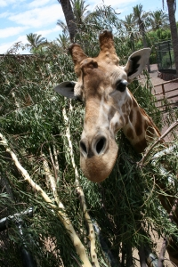

MAZ-ZOO Vadaspark
Bemutatkozás
A MAZ-ZOO Vadaspark 1918-ban egy nemzeti ünnepség alkalmával adták át a nagyközönségnek. A vadaspark egy 500 hektáros területen körülzárt területen fekszik, a fővárostól nem messze. Körülbelül 40 hektáron található a parkoló, a pihenőpark és a tűzrakóhely és a vadbemutató, ezenkívül innen indul a túraútvonal is.
A hozzánk érkező vendégek alakítják a jövőképünket, ezért törekszünk többrétű családi szabadidőprogramok kialakítására, a Magyarországon, Európában és más földrészeken őshonos vadfajok bemutatására.